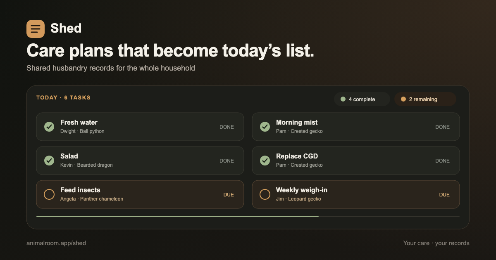

Shed gives the household one shared care list and one reliable history for every animal.

Schedules, records, and trends stay together on each animal’s profile.
Keep feeding, misting, water, supplements, and maintenance in one current list. Unfinished care carries over for one day.
Each keeper signs in with a private code. Completed care is credited to the person who did it.
Keep weights, enclosure details, equipment, notes, and recorded events together for each animal.
Create daily, weekly, every-N-day, monthly, and one-time routines in the app.
Track weighed inventory and forecast upcoming meals from current weights and growth trends.
Export JSON or CSV, restore in the app, and keep dated SQLite backups.
Run Shed on a Raspberry Pi, NAS, old PC, or any always-on machine with Docker.
The installer downloads Shed, enables sign-in, and prints the local address to open. Enter the one-time setup token from shed/.env to create your Head Keeper account. Run the same command later to update without replacing your database or settings.
Want enclosure monitoring too? Choose Haven in the Haven installer to install and connect Shed + Bask.
Your care plans become a clear set of tasks for the right animals.
Everyone uses their own phone, and every device updates to show who completed the task.
Review weights, feedings, husbandry changes, and health notes. Correct mistakes without erasing the original record.
No. Shed runs on your own network with no Animal Room account or subscription. Optional integrations connect only when you enable them.
The first person to set up Shed becomes the Head Keeper and manages animals, care plans, exports, and household access. Additional Keepers use private codes to record care without changing schedules or deleting history.
No. Export open JSON and CSV files, restore a backup in the app, and keep dated SQLite snapshots.
Use any always-on machine that runs Docker: a Raspberry Pi, old laptop, NAS, or home server. Shed needs at least 1 GB of memory; running it with Bask needs at least 2 GB.
A 512 MB Pi Zero 2 W is suitable for Bask alone, not Shed.
Run curl -fsSL https://animalroom.app/uninstall.sh | bash and choose Shed. Records are kept by default. Add --purge to erase them too; the uninstaller creates a backup first and asks you to confirm.
Haven is the paired Bask + Shed setup and read-only room display. The apps remain independent and keep separate, portable data.
Use the numeric address printed by the installer, such as http://192.168.1.50:3000. A .local address does not work on every device. Low memory can also stop an app from starting.
Run curl -fsSL https://animalroom.app/doctor.sh | bash for a read-only diagnostic report. It excludes records, passwords, access codes, and secret values.
No. Shed is a planning and recordkeeping tool, not veterinary advice or a universal care guide. Species targets and schedules should always come from appropriate, trusted sources.